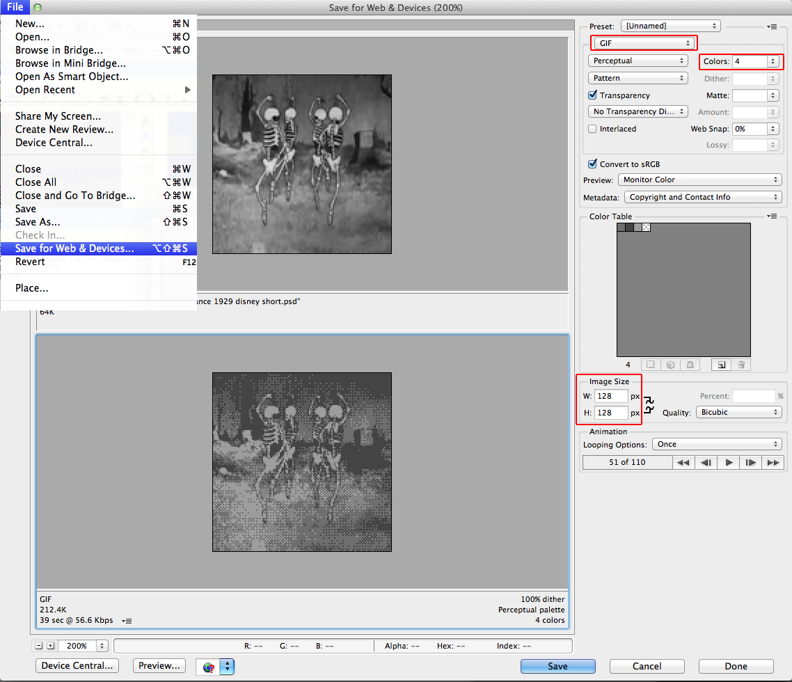

NESFlix Conversion Tool by Andrew Reitano / Batsly Adams
NESFlix by Don Miller / NO CARRIER
This tool will create an NES compatible array of CHR pages from a 4-color animated GIF for use with NESFlix.
OPTIONS
MMC3 / MMC5
This option will affect the output format of the CHR. MMC3 supports up to 64 frames of animation while MMC5 supports up to 256.
AUTOCONVERT
EXPERIMENTAL. Works on some GIFs, will perform 4 color conversion and 128x128 resizing. Use the Photoshop tutorial for best results.
DELETE FIRST TILE OPTION
Since the we using an entire CHR page to display the video there are no available blank tiles to fill the rest of the screen. This option allows you to delete the top left corner tile to provide a solid fill for the unused space.

BRIEF PHOTOSHOP TUTORIAL
Open up an MP4/AVI in Photoshop, use the trim settings to get a loop that you're happy with. Don't forget to watch your frame count, 64 for MMC3 / 256 for MMC5.

Select "Save for Web & Devices", play with the dither settings to see what looks best. Be sure to set the output to GIF. Reduce to 4 colors, don't worry about the resulting palette, the tool will handle the conversion. The NES palette will ultimately decide the resulting color. The size also needs changed to 128x128, the size of a single CHR page.

Open up the NESFlix conversion tool and click the CONVERT button, this should create a <filename.gif>.chr in the current directory.

Edit the appropiate compilation file to include the new CHR movie.

Don't forget to edit the number of frames to make sure the movie loops properly!

Compile and enjoy.